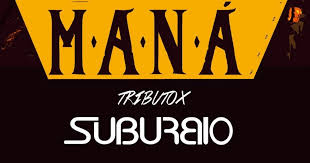
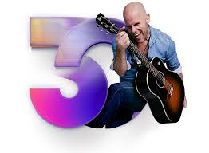
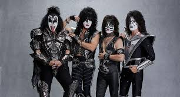

CATEGORÍA: CONCIERTOS
RELACIÓN DE EVENTOS
La relación de eventos próximos es la siguiente:

TRIBUTO A MANÁ
- Organizador del evento
- SUBURBIO
- Descripción:
- Suburbio nos tiene preparado un show especial con lo mejor de Maná, sera un show a la carta don los asistentes escogerán los temas.
- Lugar:
- Lima
- Fecha y Hora:
- Sábado 25 de abril, 10:00 pm
- Costo de la entrada:
- 15 soles
MUSICLINK FEST: Transmisión en vivo
- Organizador del evento
- Musiclink
- Descripción:
- Musiclink trae el primer festival online de talento emergente peruano directo a tu casa! Únete al Musiclink Fest y dale play a la diversión!
- Lugar:
- Lima
- Fecha y Hora:
- Jueves 30 de abril, 7:00 pm
- Costo de la entrada:
- 10 soles

GIAN MARCO: 30 años
- Organizador del evento
- Joinnus
- Descripción:
- Gianmarco, nuestro más reconocido cantautor, celebrará sus 30 años de carrera artística el sábado 15 de agosto en el Estadio Nacional de Lima.
- Lugar:
- Estadio Nacional
- Fecha y Hora:
- Sábado 15 de agosto, 6:00 pm
- Costo de la entrada:
- 45 soles

KISS
- Organizador del evento
- Joinnus
- Descripción:
- Kiss regresa al Perú como parte de su gira The End of the Road World Tour. El sábado 2 de mayo del 2020 ofrecerán ofrecer un espectacular concierto en en la Arena 1 de la Costa Verde.
- Lugar:
- Lima
- Fecha y Hora:
- Sábado 2 de mayo, 8:00 pm
- Costo de la entrada:
- 75 soles
REGRESAR A PÁGINA PRINCIPAL